Install and Configure Operators
In this section, you will be installing additional operators needed for deploying Tenant cluster.
Prerequisites
-
Verify that sno1 cluster is deployed successfully.
-
Access the sno1 cluster via CLI and web console.
-
Ensure that
sno1.lab.example.comnode is inReadystatus and all cluster operators are available.Sample output:[root@hypervisor ~]# oc get nodes NAME STATUS ROLES AGE VERSION sno1.lab.example.com Ready control-plane,master,worker 23h v1.29.7+4510e9c [root@hypervisor ~]# oc get clusterversion NAME VERSION AVAILABLE PROGRESSING SINCE STATUS version 4.16.8 True False 23h Cluster version is 4.16.8
Install OpenShift Virtualization Operator
-
Access the operator hub from the web console of sno1 cluster.
From the left navigation pane, click .
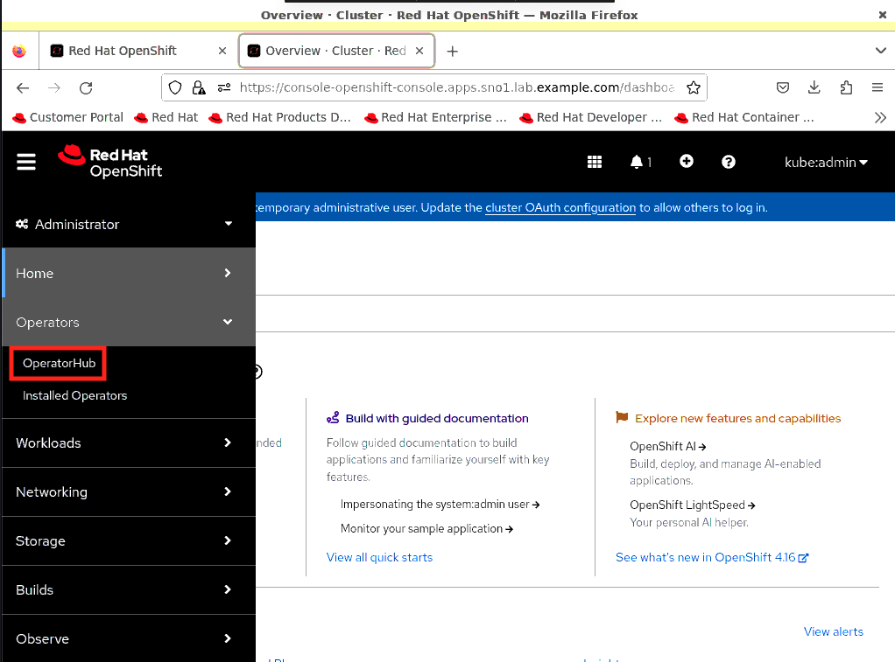 -
In a search window, search openshift virtualization and select the
OpenShift Virtualization.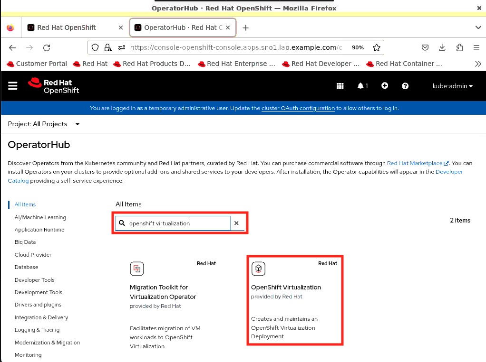 -
Click Install to open the install options.
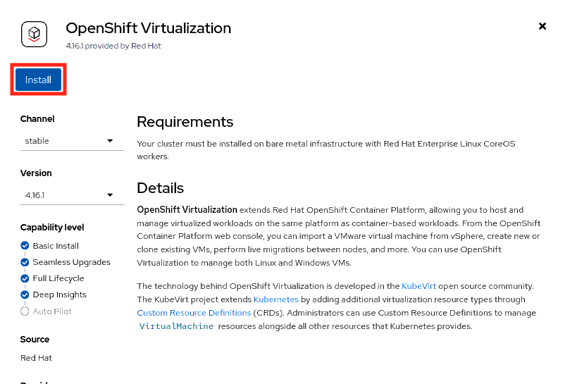 -
Keep all options as is, with no change in selected options and then click Install to install the operator.
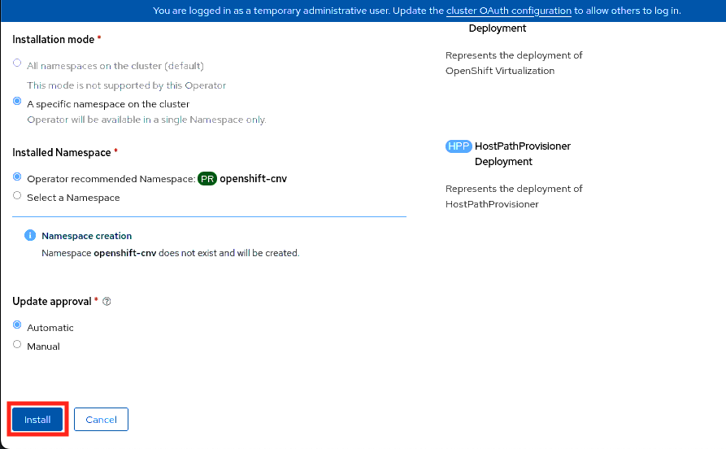 -
Click Create HyperConverged to create the resource.
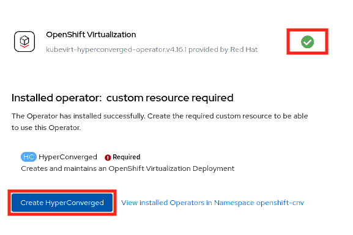 -
Keep all options as is, with no change, in selected options and then click Create to create the resource.
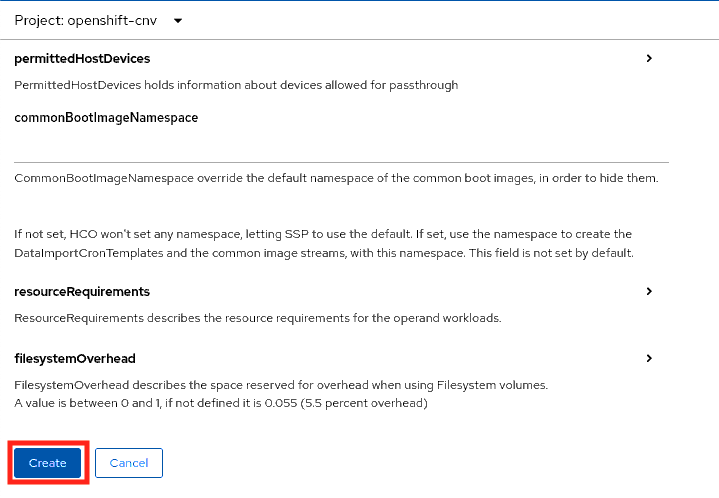 -
Notice it goes into
Progressing, Degradedconditions.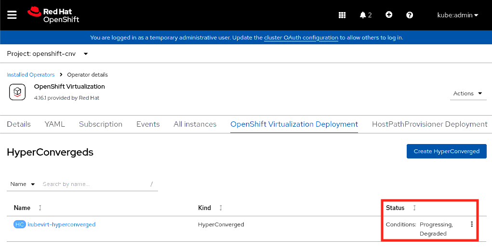 -
After 3-4 minutes, notice the
Refresh web consolemessage on window.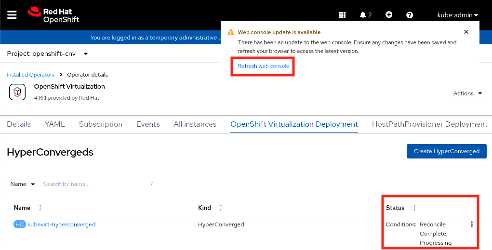 -
After 3-4 minutes, HyperConverged is in
Reconcile, Complete, Available, Upgradableconditions.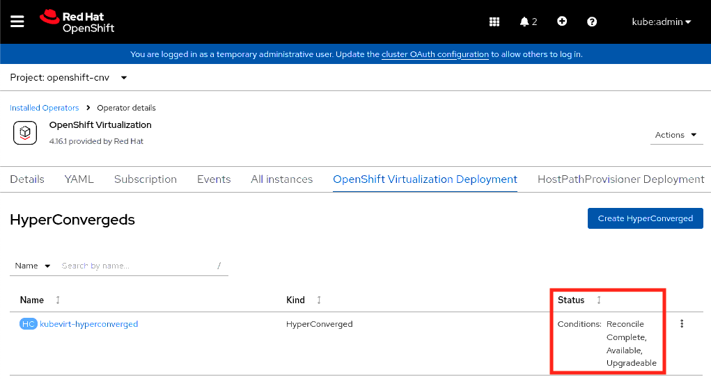
Install OpenShift Data Foundation Operator
-
Access the operator hub from the web console of sno1 cluster.
From the left navigation pane, click .
-
In a search window, search odf and select the
OpenShift Data Foundation.
-
Click Install to open install options.
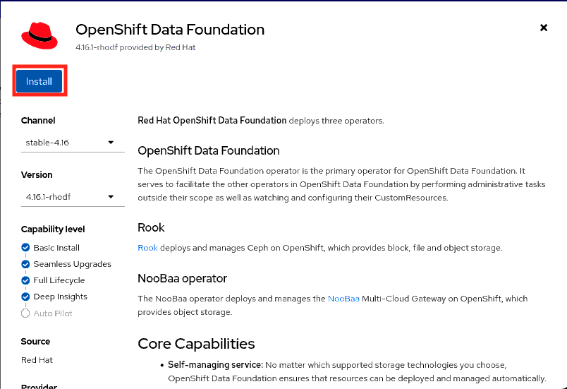 -
Keep all options as is, with no change, in selected options and then click Install to install the operator.
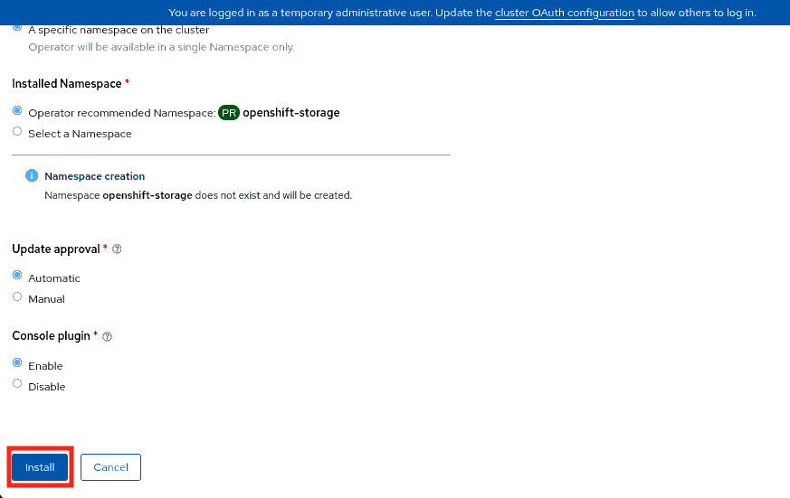 -
After 3-4 minutes, notice the
Refresh web consolemessage on window.First, refresh the web console and then click Create StorageSystem to create the resource.

-
Create the StorageSystem.
-
Provide backing storage details.
Deployment type:
Full deployment.Select
Connect an external storage platform.Storage platform:
Red Hat Ceph Storage.
Check box the
Use Ceph RBD as the default StorageClass.Click Next to proceed.

-
Provide connection details.
Use the
Download scriptoption to download the Python script.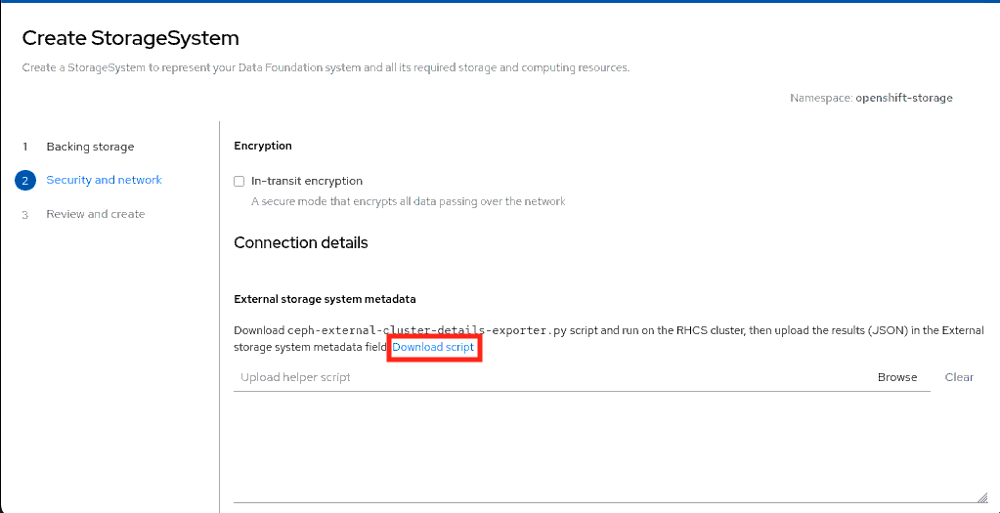You will need to run this script on the
storageVM.scp /root/Downloads/ceph-external-cluster-details-exporter.py root@storage:.Password for
rootuser isredhat.Sample output:[root@hypervisor ~]# ls /root/Downloads/ ceph-external-cluster-details-exporter.py [root@hypervisor ~]# scp /root/Downloads/ceph-external-cluster-details-exporter.py root@storage:. root@storage's password: ceph-external-cluster-details-exporter.py
Run the
ceph-external-cluster-details-exporter.pyscript on thestorageVM and store output inoutput.jsonfile.python ceph-external-cluster-details-exporter.py --rbd-data-pool-name default.rgw.control > output.jsonSample output:[root@hypervisor ~]# ssh root@storage root@storage's password: [root@storage ~]# ceph osd lspools 1 .rgw.root 2 .mgr 3 default.rgw.log 4 default.rgw.control 5 default.rgw.meta [root@storage ~]# python ceph-external-cluster-details-exporter.py --rbd-data-pool-name default.rgw.control > output.json
Copy the
output.jsonfile fromstorageVM to hypervisor.Run following command on hypervisor.
scp root@storage:/root/output.json /root/Sample output:[root@hypervisor ~]# scp root@storage:/root/output.json . root@storage's password: output.json 100% 1333 3.5MB/s 00:00 [root@hypervisor ~]# cat output.json [{"name": "rook-ceph-mon-endpoints", "kind": "ConfigMap", "data": {"data": "storage=192.168.122.9:6789", "maxMonId": "0", "mapping": "{}"}}, {"name": "rook-ceph-mon", "kind": "Secret", "data": {"admin-secret": "admin-secret", "fsid": "ce583900-6387-11ef-b336-5254000aa988", "mon-secret": "mon-secret"}}, {"name": "rook-ceph-operator-creds", "kind": "Secret", "data": {"userID": "client.healthchecker", "userKey": "AQCvG85m2K12GxAAvQeqtNb8TrkbmNtrQon2Bg=="}}, {"name": "monitoring-endpoint", "kind": "CephCluster", "data": {"MonitoringEndpoint": "192.168.122.9", "MonitoringPort": "9283"}}, {"name": "rook-csi-rbd-node", "kind": "Secret", "data": {"userID": "csi-rbd-node", "userKey": "AQCvG85mbOq3GxAALYQ2DP4V2Sq/i198FffI4A=="}}, {"name": "rook-csi-rbd-provisioner", "kind": "Secret", "data": {"userID": "csi-rbd-provisioner", "userKey": "AQCvG85mRgrvGxAAIyfBypIKKkhtiSQdlulsVA=="}}, {"name": "rook-ceph-dashboard-link", "kind": "Secret", "data": {"userID": "ceph-dashboard-link", "userKey": "https://192.168.122.9:8443/"}}, {"name": "ceph-rbd", "kind": "StorageClass", "data": {"pool": "default.rgw.control", "csi.storage.k8s.io/provisioner-secret-name": "rook-csi-rbd-provisioner", "csi.storage.k8s.io/controller-expand-secret-name": "rook-csi-rbd-provisioner", "csi.storage.k8s.io/node-stage-secret-name": "rook-csi-rbd-node"}}] -
Click Browse to provide the content of the
output.jsonfile.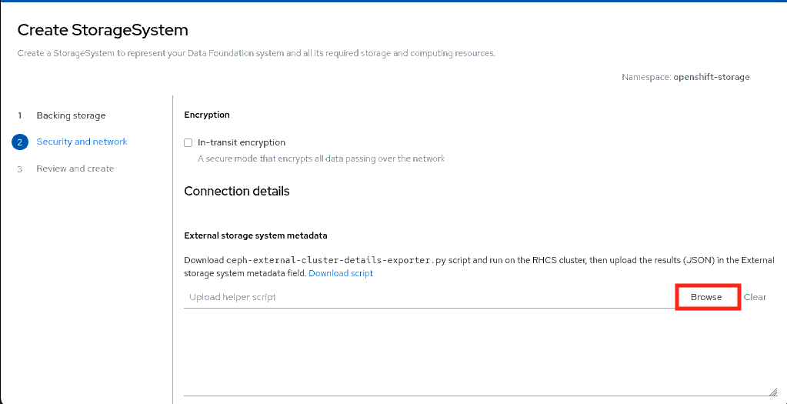 -
Select the
output.jsonfile and click Open.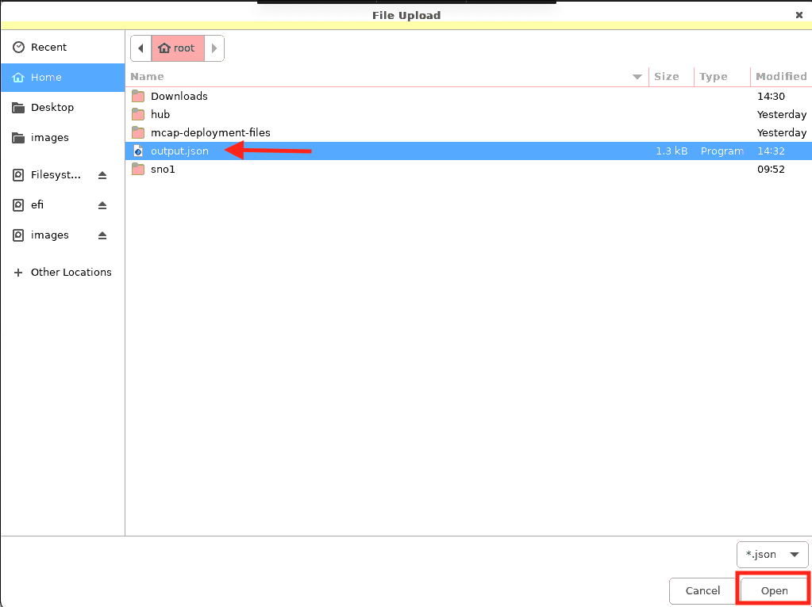 -
Click Next to proceed.
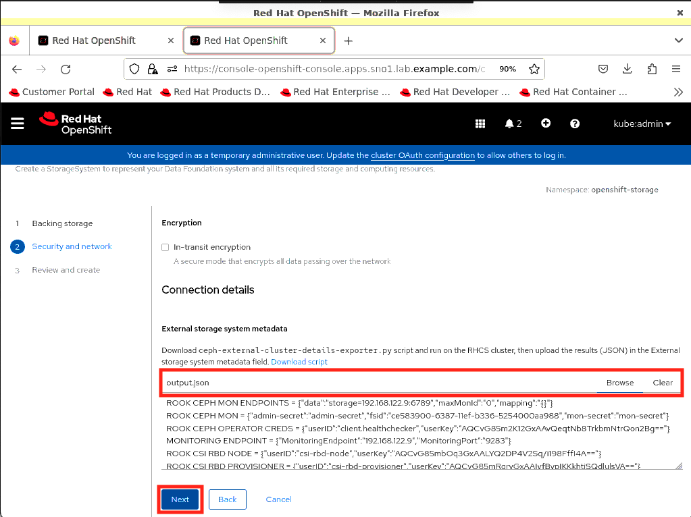 -
Click Create StorageSystem to create the StorageSystem.
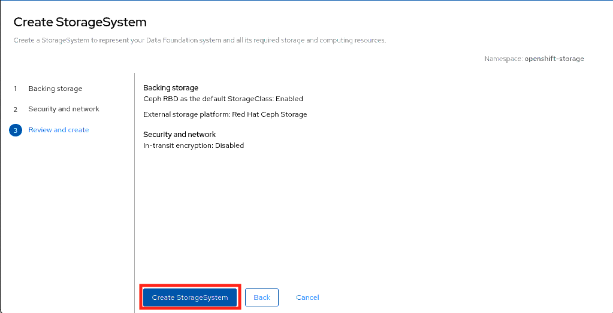 -
Notice the raw and used capacity.

-
Notice the conditions as
Available, VendorCsv Ready, Vendor System Present.
-
Verify that the operator is installed successfully in
openshift-storagenamespace.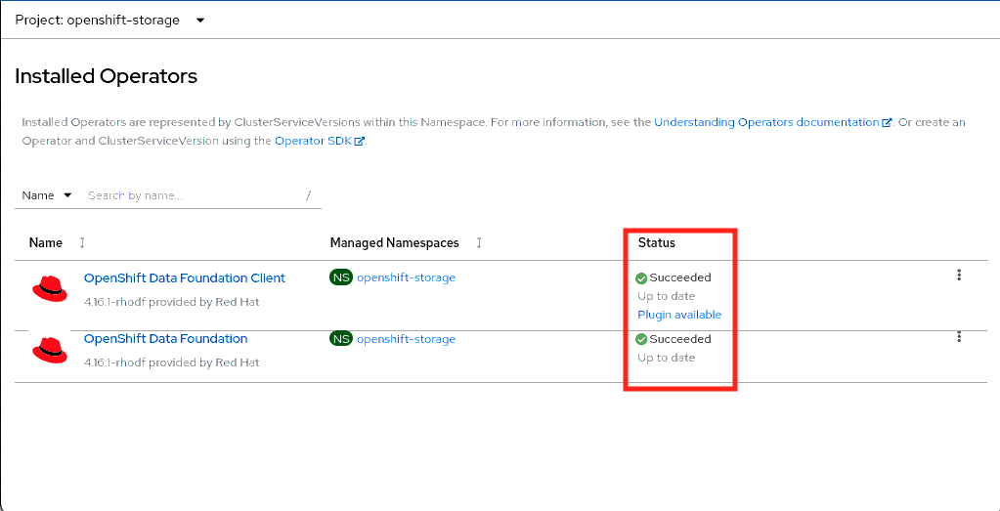
-
Install NMState Operator
-
Access the operator hub from the web console of sno1 cluster.
From the left navigation pane, click .
-
In a search window, search NMstate and select the
Kubernetes NMState Operator.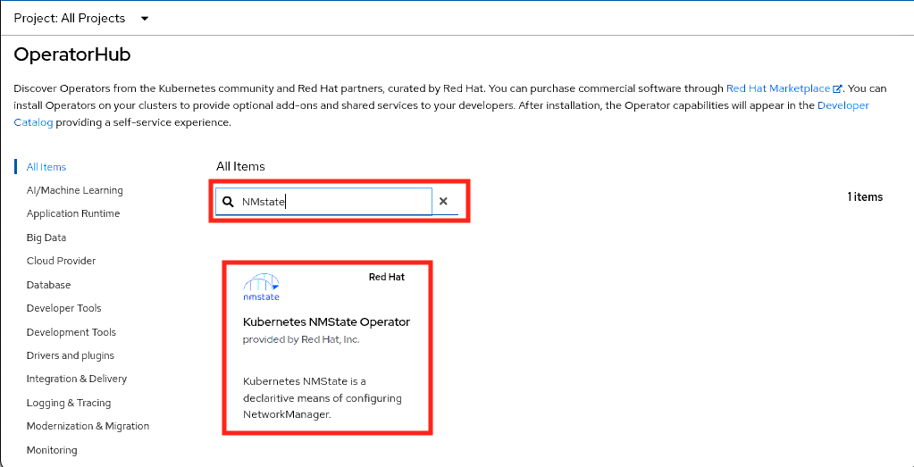 -
Click Install to open install options.
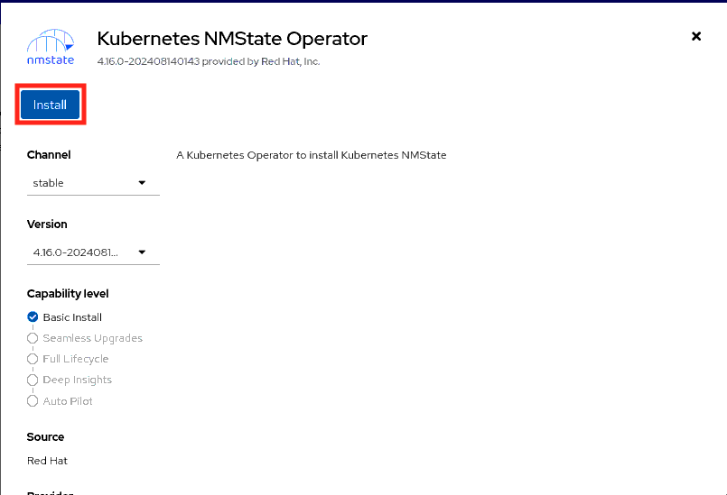 -
Keep all options as is, with no change, in selected options and click Install to install the operator.
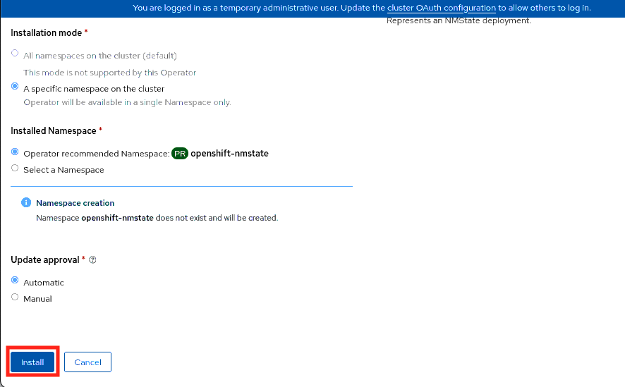 -
Click View Operator to view the operator details.
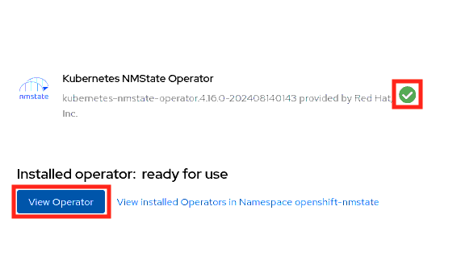 -
In
NMStatetab and click Create NMState to create the resource.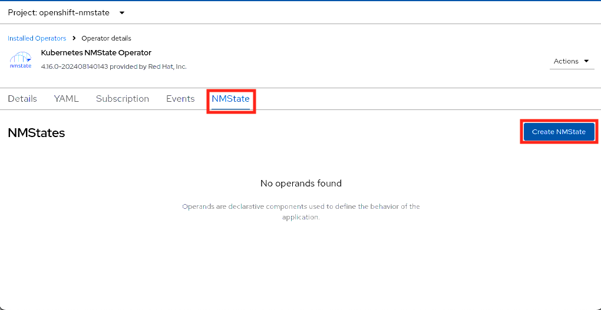 -
Keep all options as is, with no change, in selected options and then click Create to create the resource.
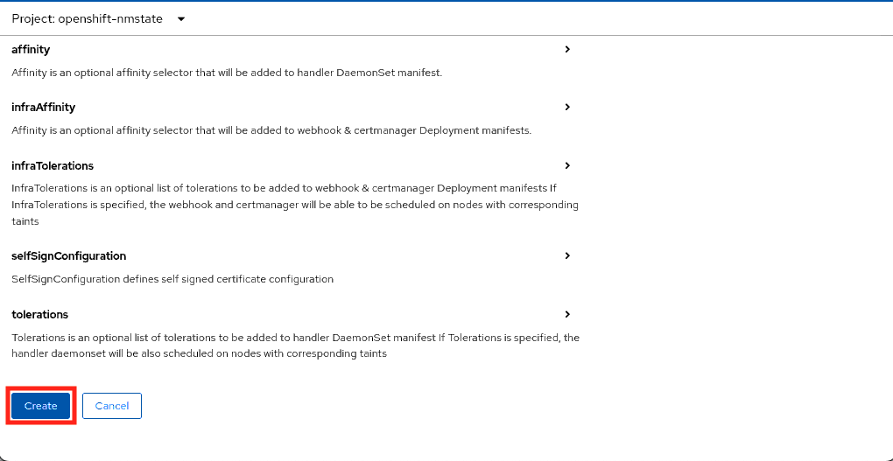 -
Notice
nmstateresource is created.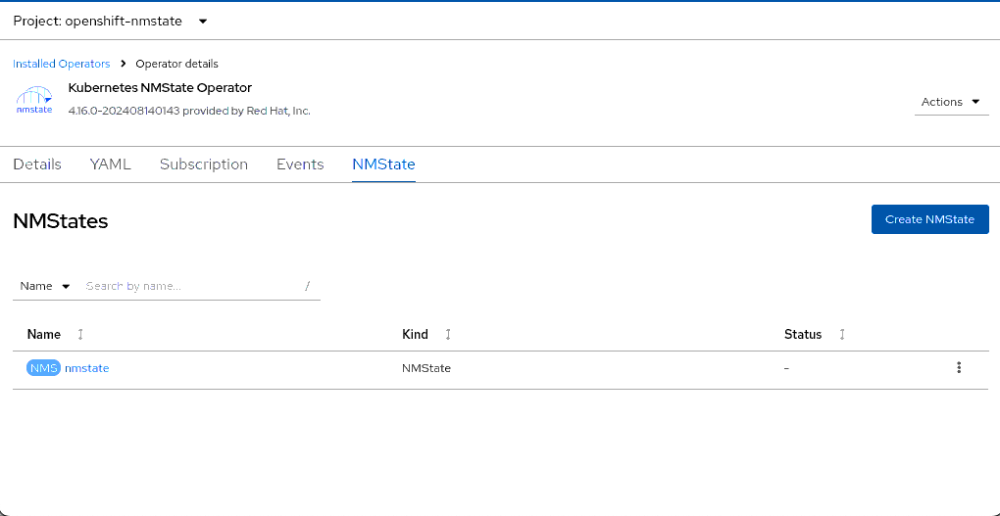 -
After 3-4 minutes, notice the
Refresh web consolemessage on window.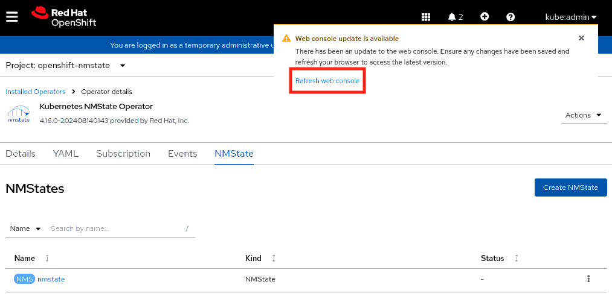